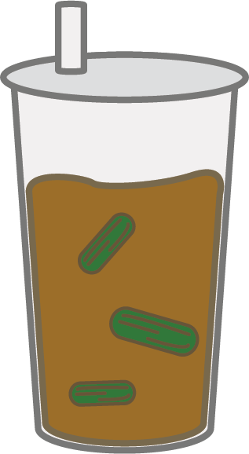

冬瓜茶 WINTER GOURD TEA
This is probably my favourite Taiwanese drink! These are often super sweet since they are made out of winter gourd sugar. This sugar is extracted from a kind of vegetable called winter gourd, and this kind of sugar is actually very similar to brown sugar. Winter gourd sugar is often sold in a big brick, and are supposed to be broken into bits at home. This sugar is then put into boiling water, and the result is a brown sugary drink. Many people like to drink it as is, but many shops sell them with added milk.